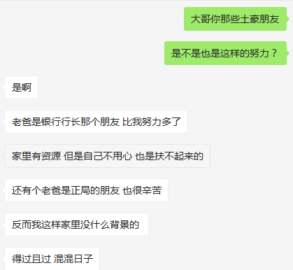

心灵鸡汤
- 作者:c4bbage
- 时间:2017.8.17
- 链接:http://dobest1.com/Heart chicken soup/
有的是自己心中所念，有的是感觉确实如此。
- 永远不要给自己定明天、后天、下个月，应定日期 2017年8月18日、2017年8月18日。让自己尝尽失败的滋味。- 我
- 越厉害的人越拼，因为他周围都是这样的人，深知实现精神自由的前提是财务自由和迁徙自由；越不上进的人越懒，因为当一个井底之蛙，大家你看看我，我看看你，都差不多，就觉得日子过的蛮好的。所以这个世界的真相，有时候蛮残酷却也蛮励志的：无论中外，原来那么多比你有钱的人，一代一代的，都还比你努力啊。 
- 看清一个人何必去揭穿；讨厌一个人又何必去翻脸。活着，总有看不惯的人，就如别人看不惯我们。活着，说简单其实很简单，笑看得失才会海阔天空；心有透明才会春暖花开。
- 如果有一件工作你来做，可以做到70分，你的同事也可以做到70分，那么你的价值其实不是70分，是70-70 等于0。如果有一件工作你的同事可以做到75分，而你可以做到85分，那你的价值就是85-75等于10分。
- practice makes perfect.